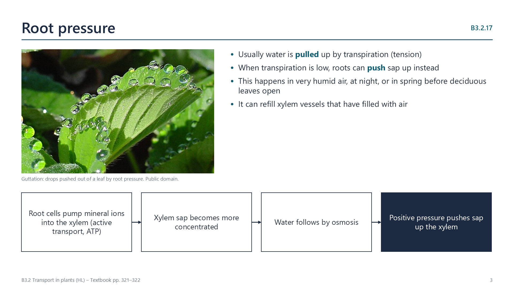

Root pressure
pp. 321–322
Root cells use ATP to pump mineral ions into the xylem by active transport. The xylem sap becomes more concentrated, so water follows by osmosis and a positive pressure builds that pushes sap upwards. Usually water is pulled up by transpiration, but root pressure matters when transpiration is low: in very humid air, at night, or in spring before deciduous leaves open. It can refill xylem vessels that have filled with air, and it causes guttation, drops of sap at the edges of leaves.